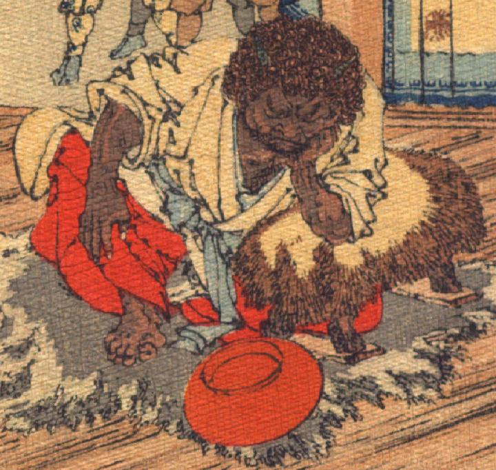

酒呑童子。肌は茶色く、縮れた毛が生え、額に2本角が生えている。眉毛は濃く、鼻は横に潰れている。白い着物と赤い袴を身に着け、片膝を立てて、毛皮の敷物の上に座っている。毛皮を掛けた脇息に左腕を載せて頬づえをつき、目をつぶっている。脇息の脇に朱色の盃がひっくり返って置かれている。
出典：親書誌：U426_nichibunken_0113：Les Ogres d'Oyeyama／日付：2006／資源識別子：U426_nichibunken_0113_0005_0000
Copyright (c)2010- International Research Center for Japanese Studies, Kyoto, Japan. All rights reserved.